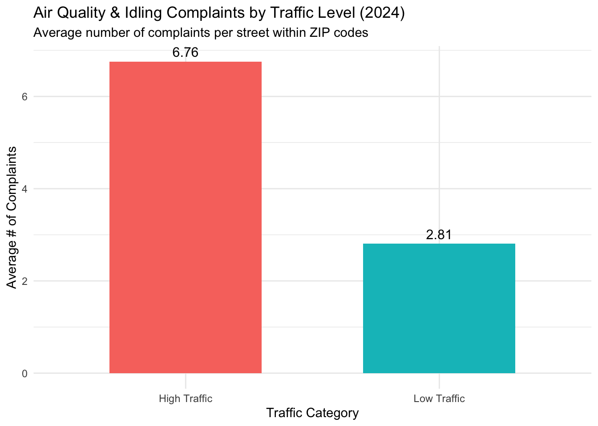
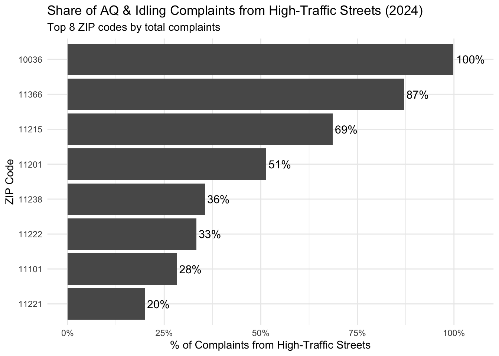

Show code
library(httr2)
library(readr)
library(dplyr)
library(stringr)
library(ggplot2)
library(tidyr)
library(scales)Selena Li
Our team’s overall question looks at how street-level conditions in New York City relate to patterns in 311 complaints. The idea behind this project is that 311 data reflects what residents actually notice and experience in their daily lives, especially when certain conditions become disruptive or uncomfortable.
Traffic is one of the most visible street-level factors in the city, so understanding how it connects to different types of complaints can help explain where and why people choose to report issues.
My individual contribution focuses on the following specific question:
Do street segments with persistently high traffic volumes generate more Air Quality and Idling Vehicle complaints than nearby lower-traffic streets within the same ZIP code in 2024?
I chose this question because air quality and vehicle idling are issues that residents can directly observe, especially on busy streets. Comparing streets within the same ZIP code helps reduce neighborhood-level differences and keeps the comparison more local.
Overall, my results suggest that streets with higher traffic volumes tend to receive more Air Quality and Idling Vehicle complaints than lower-traffic streets in the same ZIP code. In ZIP codes with the most complaints, a large share of those complaints comes from high-traffic streets, indicating that complaints are concentrated along traffic-heavy corridors rather than spread evenly.
I use NYC 311 service request data obtained through the NYC Open Data Socrata API. From this dataset, I focus on complaints created in 2024 and restrict attention to two complaint types:
Air Quality
Idling Vehicle
These categories are most directly related to traffic emissions and vehicle behavior.
Traffic data comes from the NYC Department of Transportation’s Automated Traffic Volume Counts dataset. This dataset contains repeated traffic measurements for streets across the city. I use these observations to construct an average traffic volume per street as a measure of persistent traffic intensity.
Because the 311 dataset is large, I download it in batches using the Socrata API. The code saves intermediate files locally and resumes safely if interrupted, allowing the report to be re-rendered without repeatedly querying the API.
library(httr2)
library(readr)
library(dplyr)
base_url <- "https://data.cityofnewyork.us/resource/erm2-nwe9.csv"
batch_dir <- "data/311_batch"
final_311 <- "data/nyc_311_2024_full.csv"
if (!dir.exists(batch_dir)) {
dir.create(batch_dir, recursive = TRUE)
}
batch_size <- 50000
offset <- 0
batch <- 1
cols_311 <- c(
"created_date",
"complaint_type",
"incident_zip",
"street_name",
"borough"
)
where_2024 <- "created_date between '2024-01-01T00:00:00' and '2024-12-31T23:59:59'"
if (!file.exists(final_311)) {
message("Downloading 311 data (2024)...")
all_batches <- list()
repeat {
req <- request(base_url) |>
req_url_query(
"$select" = paste(cols_311, collapse = ","),
"$where" = where_2024,
"$limit" = batch_size,
"$offset" = offset
)
resp <- req |> req_perform()
df <- read_csv(resp |> resp_body_raw(), show_col_types = FALSE)
if (nrow(df) == 0) break
all_batches[[batch]] <- df
offset <- offset + batch_size
batch <- batch + 1
}
data_311_2024 <- bind_rows(all_batches)
write_csv(data_311_2024, final_311)
} else {
data_311_2024 <- read_csv(final_311, show_col_types = FALSE)
}I use a similar batch-download approach for the DOT traffic data.
traffic_url <- "https://data.cityofnewyork.us/resource/7ym2-wayt.csv"
traffic_final <- "data/traffic_full.csv"
if (!file.exists("data")) {
dir.create("data")
}
batch_size <- 50000
offset <- 0
batch <- 1
if (!file.exists(traffic_final)) {
message("Downloading traffic volume data...")
all_batches <- list()
repeat {
req <- request(traffic_url) |>
req_url_query(
"$limit" = batch_size,
"$offset" = offset
)
resp <- req |> req_perform()
df <- read_csv(resp |> resp_body_raw(), show_col_types = FALSE)
if (nrow(df) == 0) break
all_batches[[batch]] <- df
offset <- offset + batch_size
batch <- batch + 1
}
traffic_data <- bind_rows(all_batches)
write_csv(traffic_data, traffic_final)
} else {
traffic_data <- read_csv(traffic_final, show_col_types = FALSE)
}After downloading both datasets, I cleaned and prepared them so they could be merged and analyzed consistently.
The DOT traffic dataset contains multiple observations per street. To represent persistent traffic exposure, I average traffic volume by street name. I also standardize street names to reduce mismatches when joining with 311 data.
This produces one traffic value per street, which makes comparison with 311 complaints more straightforward.
Next, I restrict the 311 data to the two complaint types relevant to this analysis: Air Quality and Idling Vehicle. I then aggregate complaints by street and ZIP code.
This step creates a count of complaints per street within each ZIP code.
To answer SQ3, I merge the traffic and complaint datasets and compare high-traffic streets to low-traffic streets within the same ZIP code. ## Merging Traffic and Complaint Data
By merging on cleaned street names, I align complaint counts with average traffic volume.
To make fair comparisons, I classify streets within each ZIP code:
Top 30% of traffic volume → High Traffic
Bottom 30% → Low Traffic
Middle 40% → excluded
merged24 <- merged24 |>
group_by(zip_code) |>
mutate(
traffic_group = case_when(
avg_traffic >= quantile(avg_traffic, 0.70, na.rm = TRUE) ~ "High Traffic",
avg_traffic <= quantile(avg_traffic, 0.30, na.rm = TRUE) ~ "Low Traffic",
TRUE ~ NA_character_
)
) |>
filter(!is.na(traffic_group)) |>
ungroup()This approach focuses the analysis on the strongest contrast between traffic levels.
This visualization compares the average number of complaints per street between high- and low-traffic streets.
bar_data <- merged24 |>
group_by(traffic_group) |>
summarize(
avg_complaints = mean(complaints, na.rm = TRUE),
.groups = "drop"
)
ggplot(bar_data, aes(x = traffic_group, y = avg_complaints, fill = traffic_group)) +
geom_col(width = 0.6) +
geom_text(
aes(label = round(avg_complaints, 2)),
vjust = -0.5,
size = 4
) +
labs(
title = "Air Quality & Idling Complaints by Traffic Level (2024)",
subtitle = "Average number of complaints per street within ZIP codes",
x = "Traffic Category",
y = "Average # of Complaints"
) +
theme_minimal() +
theme(legend.position = "none")
Interpretation High-traffic streets receive more Air Quality and Idling Vehicle complaints per street than low-traffic streets. This suggests that residents are more likely to experience or notice these issues on streets with heavier traffic.
The second visualization focuses on where complaints come from in ZIP codes with the highest total complaint counts.
zip_comp <- merged24 |>
group_by(zip_code, traffic_group) |>
summarize(
total = sum(complaints, na.rm = TRUE),
.groups = "drop"
) |>
group_by(zip_code) |>
mutate(zip_total = sum(total)) |>
ungroup()
top_zips <- zip_comp |>
distinct(zip_code, zip_total) |>
arrange(desc(zip_total)) |>
slice_head(n = 8) |>
pull(zip_code)
zip_high_share <- zip_comp |>
filter(zip_code %in% top_zips) |>
group_by(zip_code) |>
summarize(
high_share = sum(total[traffic_group == "High Traffic"]) / first(zip_total),
.groups = "drop"
)
ggplot(zip_high_share, aes(x = reorder(zip_code, high_share), y = high_share)) +
geom_col() +
geom_text(
aes(label = scales::percent(high_share, accuracy = 1)),
hjust = -0.1,
size = 4
) +
coord_flip() +
scale_y_continuous(labels = scales::percent_format(), limits = c(0, 1.05)) +
labs(
title = "Share of AQ & Idling Complaints from High-Traffic Streets (2024)",
subtitle = "Top 8 ZIP codes by total complaints",
x = "ZIP Code",
y = "% of Complaints from High-Traffic Streets"
) +
theme_minimal()
Interpretation In most high-complaint ZIP codes, more than half of Air Quality and Idling complaints come from high-traffic streets. This shows that complaints are concentrated on traffic-heavy corridors rather than evenly spread across all streets.
This analysis has several limitations. First, street-level matching using street names is imperfect and may lead to some mismatches across datasets. Second, 311 complaints represent resident reporting behavior, not direct measurements of pollution or idling. Some areas may have more complaints simply because residents are more likely to report issues.
Additionally, although comparing within ZIP codes helps control for neighborhood differences, it does not fully account for land use patterns or enforcement differences.
In this report, I examined whether high-traffic streets generate more Air Quality and Idling Vehicle complaints than lower-traffic streets within the same ZIP code in 2024. The results show that high-traffic streets tend to receive more complaints per street and account for a larger share of complaints in ZIP codes with the most complaints. These findings support the broader project goal of understanding how street-level conditions, especially traffic, relate to 311 complaint patterns.
Reproducibility Notes
All data used in this report is downloaded directly from NYC Open Data using API calls. The report follows a reproducible workflow using Quarto, and cached data files allow the analysis to be re-rendered without repeated downloads.